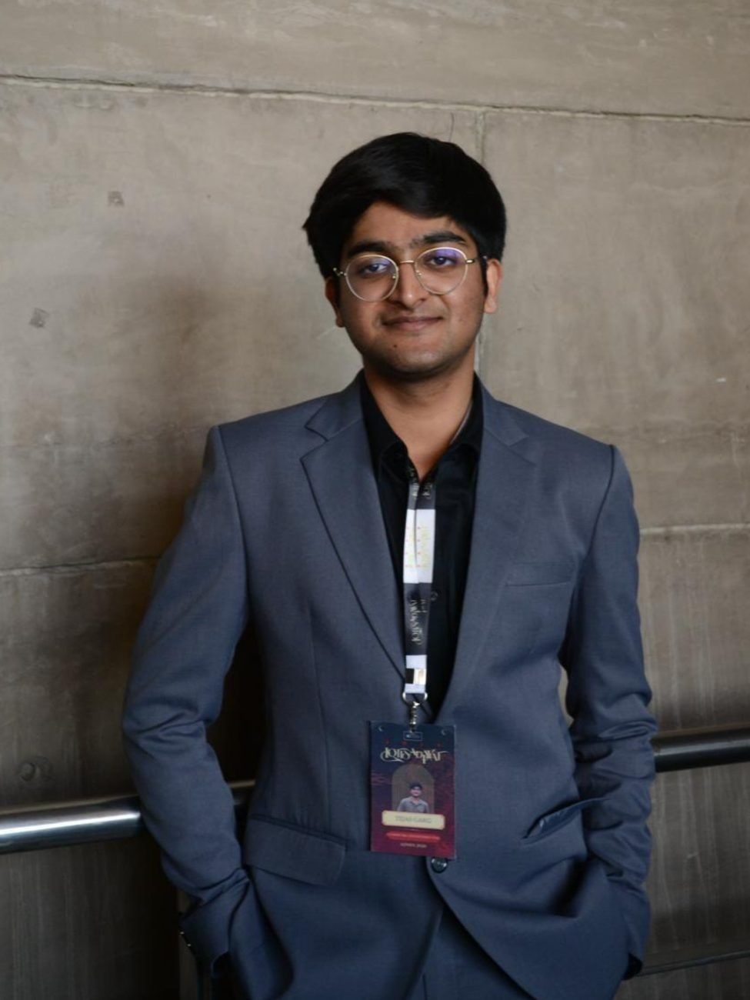
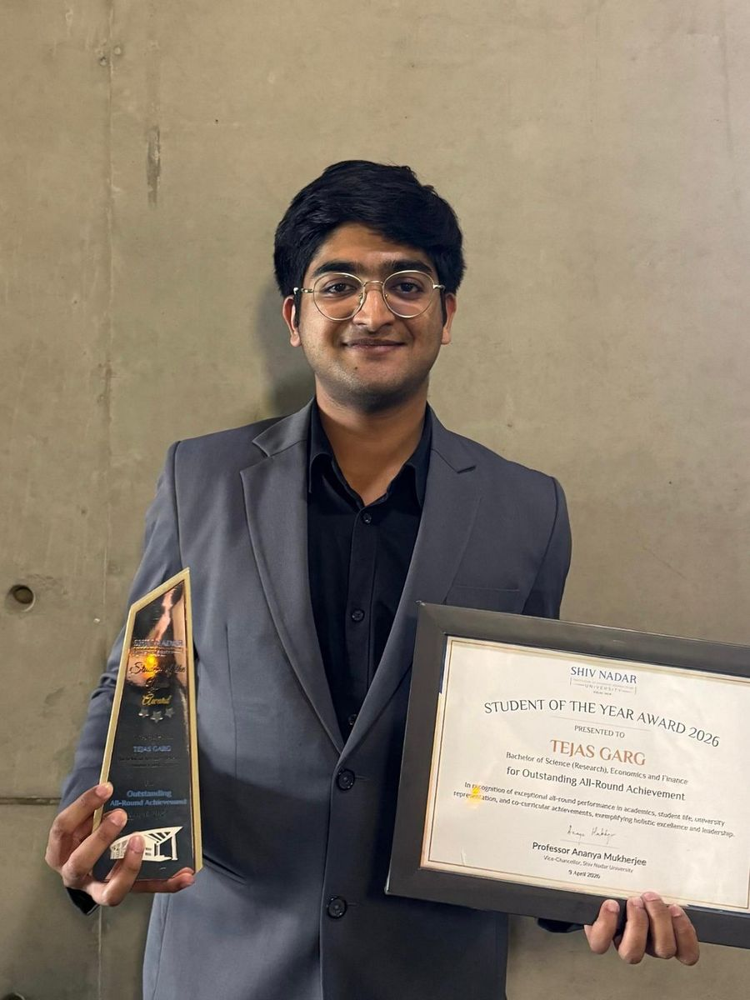
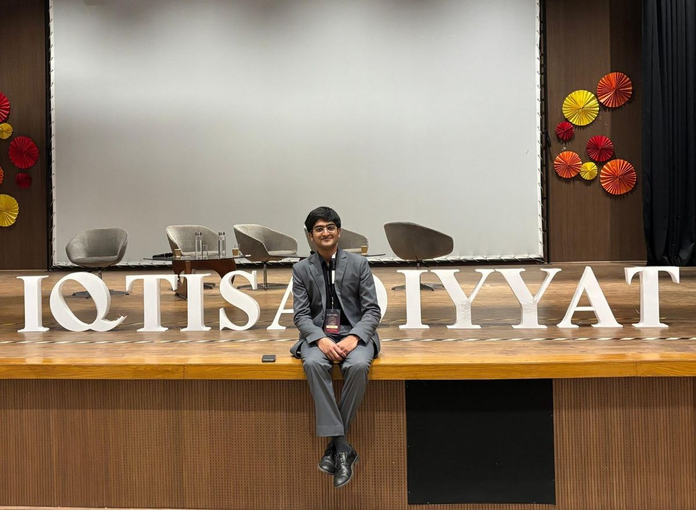
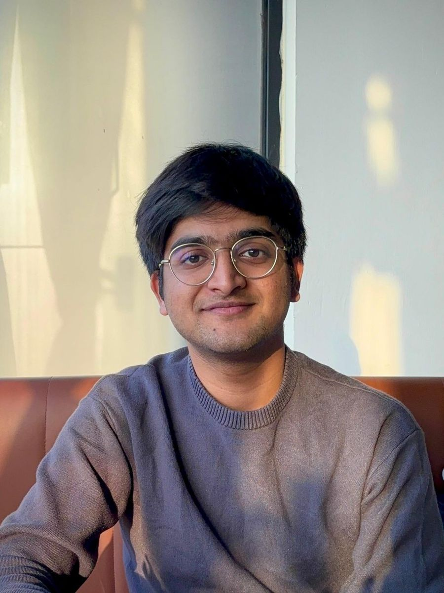
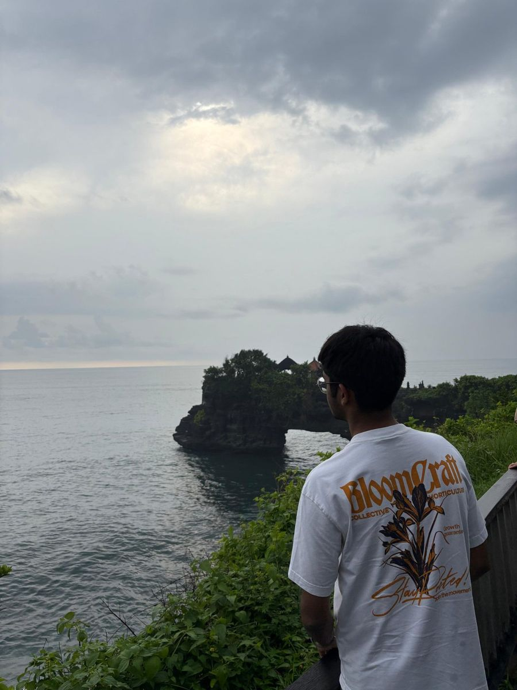
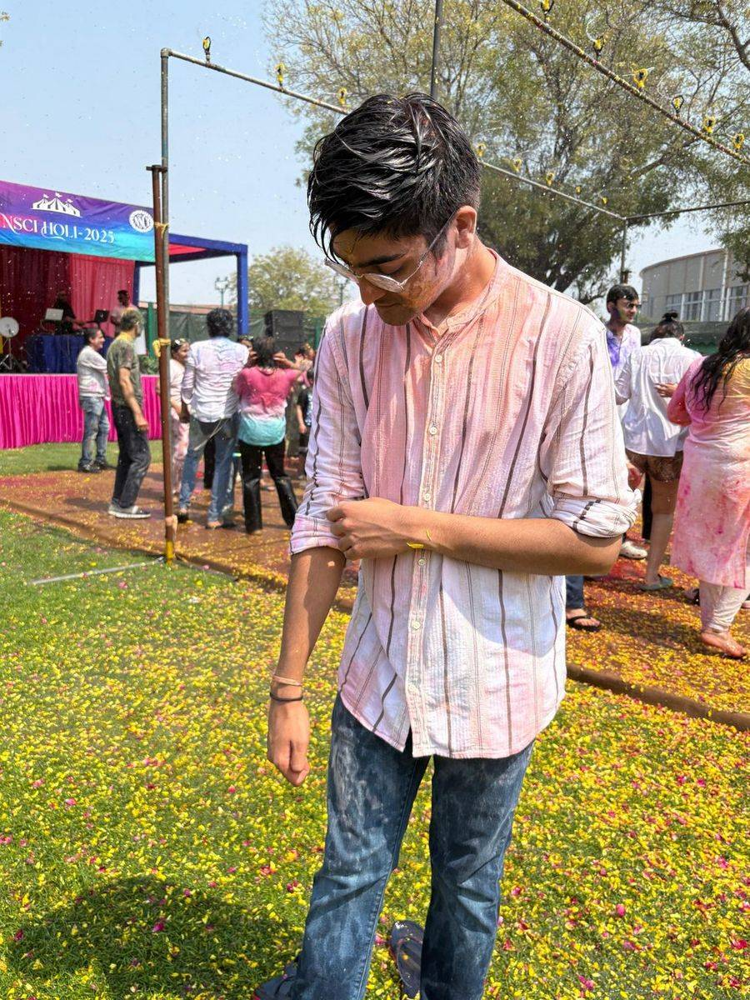
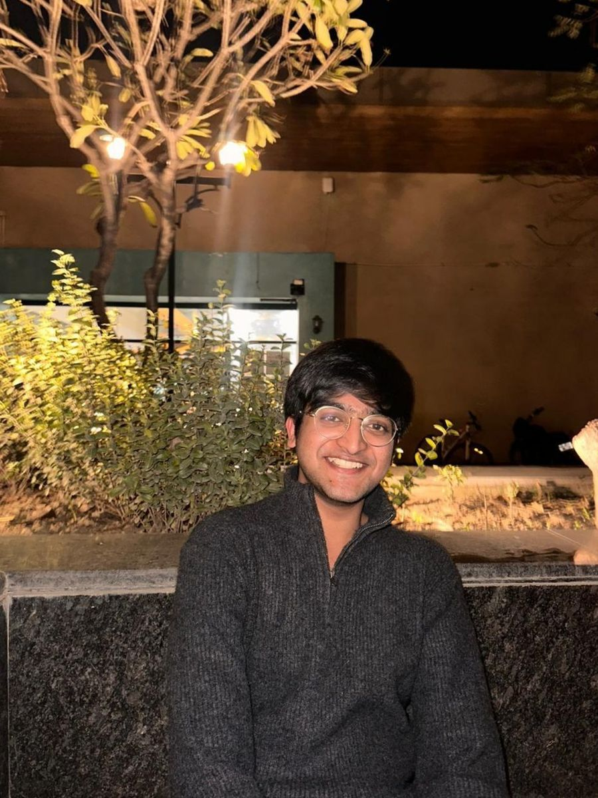

Deal Tracker
200+ rounds · 150+ fundsBuilt and kept live a tracker of Indian funding rounds and funds on Tracxn, mapping sector focus, investment stage and portfolio fit, so each mandate could be matched to the investors most likely to fit it.
Economics & Finance at Shiv Nadar University, graduating 2027. A summer in a merchant bank’s deal room1, two years on the Student Council2, and a habit of building the market tools I want to understand3.
Open to analyst internships now, and full-time roles from 2027.

A number is only worth quoting with its source attached. Hover or focus a row to check one.
| Figure | What it measures | Source | When |
|---|---|---|---|
| 8.83/10 | Cumulative GPA, B.Sc. (Research) in Economics & Finance, with the Dean’s List twice | Shiv Nadar University, through semester 6 | 2023–26 |
| 200+ | Indian funding rounds tracked in a live Deal Tracker, alongside 150+ funds | Resurgent India internship | 2025 |
| ₹20L+ | Clubs & societies funds handled, from a ₹20–25L total allocation | Secretary of Treasury, Student Council | 2025–26 |
| 58 | Clubs and societies whose budget approvals and reimbursements I managed | Secretary of Treasury, Student Council | 2025–26 |
| Top 3.3% | Of 9,172 registrants in the Matiks product case competition, case round | Matiks retention case | 2026 |
| +81.3% | Backtested total return of my NSE momentum + quality strategy, net of costs, against +37.6% for the Nifty 50 | Project dashboard, below | Feb 22–Jun 26 |
Figures are printed in green. When you check one against its source, it turns blue.
My work sat underneath the pipeline: who was raising, who was investing, what comparable companies were worth, and which investors fit which mandate.
Built and kept live a tracker of Indian funding rounds and funds on Tracxn, mapping sector focus, investment stage and portfolio fit, so each mandate could be matched to the investors most likely to fit it.
Ran structured peer comparisons of valuation multiples and competitive positioning. The output fed straight into Resurgent’s deal-pipeline research.
Researched and wrote profiles of business model, sector dynamics and financial position, in the standard format the deal team used to screen opportunities.
Found and profiled new investors through cold email and cold calls, then turned those unstructured conversations into coverage the team could reuse.
Each one started as something a textbook couldn’t settle. I build with modern tools, AI included. The financial reasoning is mine, and I’m happy to be questioned on it.
Factor investing · Python · Live dashboard
Do momentum and quality still earn their keep on Indian large-caps once you pay real trading costs?

What it taught me. The most aggressive setting had the highest gross alpha, but a moderate turnover penalty won once costs came out: trading less paid for itself. Momentum’s measured IC was borderline (−0.0018) against quality’s +0.0064, so the model leaned 58% quality.
Backtest results are hypothetical and net of modelled transaction costs.
Quantitative finance · Python · Live dashboard
What drives Indian equity returns beyond the market, and how do you report it without overstating the case?

What it taught me. The part I’m proudest of is the warning label. The dashboard says plainly that it projects today’s Nifty 50 backward, so survivorship bias is present. A factor result is only as honest as the caveats printed next to it.
Representing students is budgets, rules and records. I’ve managed the money, kept the minutes, and now preside over the Senate.
March 2025 – March 2026
Left behind: the Treasury Policy Compendium, which I co-authored. Handover protocols, audit procedures and fee-waiver reforms, so the next treasury cohort starts from written rules instead of memory.
March – September 2026
Left behind: an Executive Cabinet Work Log and a recurring manifesto review, so delivery against promises became auditable rather than self-reported.
September 2026 – present
Now: presiding over the Senate and leading the reconstitution of the Student Council Constitution: governance, roles, committees, elections and accountability, plus the policy frameworks that formalise how the Council runs.

For outstanding all-round achievement: academics, university representation and contributions to student life.
How factor signals survive contact with liquidity, costs and the way Indian markets actually trade.
Reading filings properly, and the gap between a price and a value that everyone pretends is small.
A note-taking and screening process where the work stacks up instead of restarting every week.
Where it genuinely speeds the work up, and where it quietly invents a number and hopes nobody checks.
Education, training and tools, for anyone reading closely.
Finance only really clicked for me outside the classroom: in a deal room in Gurugram, approving budgets for fifty-eight clubs and societies, and over a lot of evenings rebuilding factor models until the numbers finally behaved.
Off the clock I’m usually deep in a manga or an anime, drawing, losing an evening to a game, or planning the next trip. Most of the photographs here come from the places that reset my head.





I’m open to analyst internships now and full-time roles from 2027, across investment banking, private equity, venture capital and fintech. Email reaches me fastest.
tejasgarg1702@gmail.com